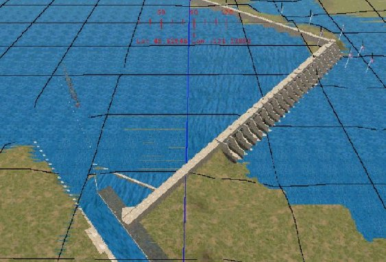
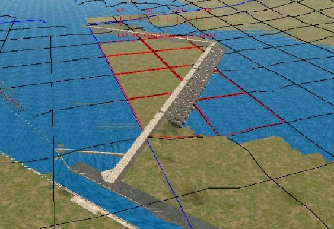
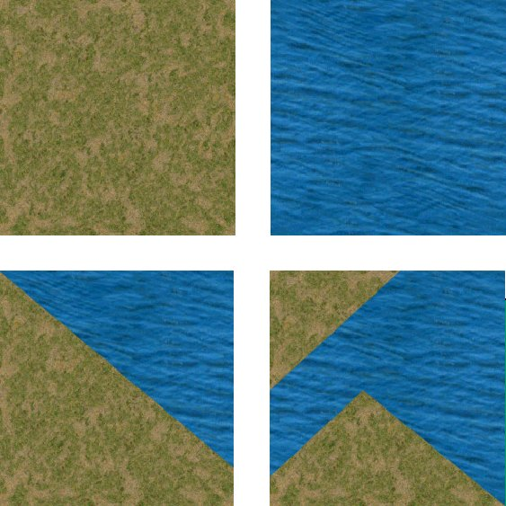
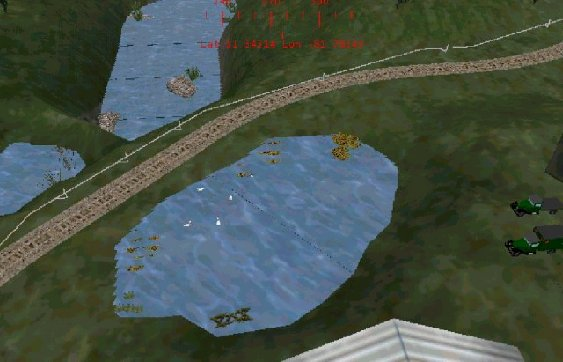
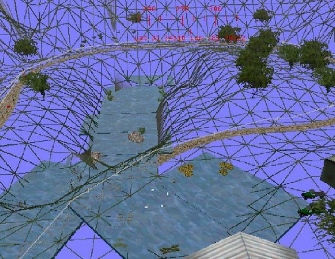

To use my technique, you must replace the watertop.ace file in your routes\envfiles\textures directory with an opaque water texture such as the one the Pat Malicki has designed (click here to download Pat's water texture). This is a fairly realistic texture with ripples and waves and it is animated. Pat tells me that it is not animated by design, MSTS does is automatically. You can’t see the animation with the default watertop.ace because there is no pattern to it.
Once you have the new watertop.ace file installed, copy this file into your <route-name>\terrtex directory for use as a terrain texture. You may also want to create a terrain transfer from this texture. To do this, copy the watertop.ace into your <route-name>\textures directory. Then add the following lines to your <route-name>.REF file:
Transfer (
FileName ( Watertop.ace )
Class ( Transfers )
Align ( None )
Description ( Watertop )
)
You will need some add-on tools for this task. You will need TGATools by Martin Wright: available from Martin's site at http://www.mnwright.btinternet.co.uk/train/train.htm to convert .ACE files to .BMP images for editing and back to .ACE files. Most important, you will need a good graphic editor such as Paintshop Pro to edit the images extracted by Tgatools2. You will need a 3d modeling program such as Trainsim Modeler or 3d Canvas if you are going to create the water objects described below.
I will describe three different methods of handling water in MSTS. First, the water built in to the Route Editor. Second, is a method involving terrain textures. Lastly, a technique used by Bill Burnett (a.k.a. Southern_Railway a.k.a. Tree_Frog) in SeaView which involves the use of flat custom scenery objects that look like water.
If your route has a lot of water in it such as a major river, large lake, or ocean, then you can use the route editor water method for a significant portion of it. If your route has lakes and ponds at different levels, and they are not too large, Bill Burnett’s method is the easiest to implement. Rivers flow down hill. There is a law on the books about that, somewhere! To handle water that changes elevation such as at a dam or waterfall, my terrain texture method is probably best. You will probably want to use combinations of all three.
Enough of the preliminaries. Let’s look at an overhead view of The Dalles dam in my Columbia Gorge Route.

Two tiles are shown in this shot. The boundary between the tiles is the blue vertical line in the center of the picture. All the water in the left tile except the square at the bottom is default MSTS water at a height of 51 meters. All water to the right of the dam is in the right hand tile and is default MSTS water at a height of 25 meters. The areas between the blue line and the dam plus the square at the bottom (with the lock) are terrain manipulations. The upper right corner of the dam is still under construction.
What I have done here is to raise the terrain between the blue line and the dam to the upstream water lever of 51 meters. Where squares intersect the dam, only the terrain above the dam was raised. Where necessary, the terrain immediately below the dam was lowered to below the downstream water level of 25 meters. This was to make sure the default water covered the land. After raising the terrain above the dam, I used the flatten function to make sure it was flat. The picture below shows what it looked like at this point.

The cutting and embankment angles were set to 88 degrees so that the transition in terrain elevation was as vertical as possible at the dam. The square at the bottom just to the left of the tile boundary and the square at the lower end of the spillway are special cases that required custom terrain files. Although the lower left square is in the left tile, the elevation to the right of the dam is lower than the tile water level. If the default water had been used, this ground would be under water.
The square at the lower end of the spillway is in the right tile but is split by the spillway. The left side needs to be at the upstream water level while the right side is partly land and partly water. The terrain above the dam is raised to the upstream water level. The portion of this square immediately below the spillway has been lowered below the downstream water level to allow the default water to be used. The land area at the bottom of the square is below the upstream water level and higher than the downstream water.
To texture these two squares, I create two special textures that are combinations of land and water. I used copy and paste in Paintshop Pro to overlay the land where appropriate with the water. The first two pictures below are of the uncut textures greenscrub.ace and watertop.ace. The next two pictures show the special textures after the copy/paste operation.

When working with the watertop.ace as a terrain texture, you need to make sure it is oriented properly. This water texture by Pat Malicki has a “grain” pattern to it. If rotated the wrong way, it will not match up to the pattern of the default water. One problem I have not addressed, yet with this texture is size. When using the watertop.ace as a texture, the pattern comes out much larger than the default water. I leave it to the reader to address this problem. Essentially, you need to reduce the size of the pattern and tile it to match the default water.,/p>
For the navigation lock, I raised the terrain inside the lock to the water level of the upstream tile. Instead of using the watertop terrain texture, which is much too large and difficult to manage, I used the transfer mentioned at the beginning of this article. I was able to adjust the transfer size to exactly match the inside of the lock.
My method of terrain manipulation and texture painting works but is somewhat difficult and temperamental! It takes a lot of patience to get the terrain shaped correctly without any gaps or bulges. For small areas of water such as ponds and lakes, Bill Burnett has come up with a method that is much easier to manage.
With Bill’s method, the first thing to do is create a flat box shape in TSM or 3D Canvas. The size of the box is up to you. For this discussion we will use 40m x 20m x .5m. Texture the top of this box with your water texture. Use any texture for the remaining sides and bottom of the box. Save this object and export it to MSTS. For small ponds or lakes this size may be fine. For larger pools of water you can connect two or more of these objects together or create a larger version that is more suitable to your needs.
Next, in the Route Editor, determine where your lake is to be located. If not already done, create a depression in the terrain, the outline and size of which is approximately the shape and size of your lake. Now select the water object created earlier. Position the object cursor (F5) near the top of one of the surrounding hills and click. Your “water box” will be floating near the spot selected. Now use the mouse and/or arrow keys to “push” the box down into the depression until the edges are hidden beneath the terrain. Viola, instant lake!
The pictures below are screenshots from Sunken Island in Bill’s Sea View 2 route. The first picture shows some ponds as they would appear in Train Simulator. The second picture shows a wire-frame view of the same spot. From the wire frame view, you can see exactly how Bill has positioned his “water boxes” to create the ponds. In the pond near the top, you can see where he has joined two or more boxes to make a larger water area.


The methods presented here are, I’m sure, not the only methods of handling water in Microsoft Train Simulator. The terrain texture method is more difficult but is probably more suitable to large areas of water such as a major river with a dam or waterfall. Bill Burnett’s method makes it very easy to put small pools of water at any elevation wherever you need them.
I hope this has been helpful. I want to thank Bill Burnett for allowing me to share his technique as well as show some screenshots from his excellent route. Good luck and if you have any questions, feel free to email me or post the question in the Route Building forum.